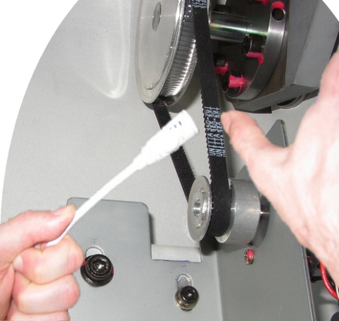
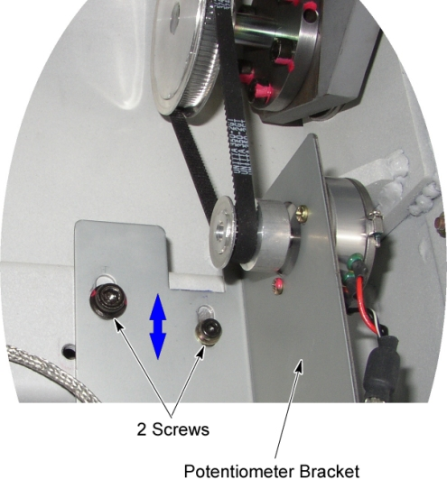

Proprietary to General Electric
Direction 5196839-800, Rev# 6
RT16 and Xtra Service Info Adv
Proprietary to General Electric |
| Required Persons | Preliminary Reqs | Procedure | Finalization |
|---|---|---|---|
| 1 |
| Last Revised: | 26 December 2007 |
| Item | Qty | Effectivity | Part# | Manufacturer | |
|---|---|---|---|---|---|
| Microphone (Refer to “Required Conditions”) | 1 | - | 5224640 | - | |
| Belt Tension Measurement CD (Refer to “Required Conditions”) | 1 | - | 5220799 | - | |
| Condition | Reference | Eff |
|---|---|---|
Microphone must be condenser type for use with a standard FE laptop. (Noise canceling microphones may not be used for this task.) Use Microphone part #5224640 with standard FE laptop for best results. | - | - |
The program BFreq1_4.exe is required. It can be acquired two ways: By acquiring media disk “Belt Frequency Measurement Class C Software” (PN# 5220799). (Preferred method). For GE Healthcare personnel only: From “Downloads” link (left side of screen) on the MI&CT Service Engineering website. (Alternate method). | - | - |
Set up a Laptop for belt frequency tool according to Setup Microphone and Belt Frequency Tool.
Raise the Table to maximum height.
Move the Cradle and IMS to OUT limit position.
Remove power from Table by turning off 120VAC, Axial Drive and HVDC switches on Service Switch Panel.
Remove the IMS Side Cover (Right).
Disconnect 2 GND cables from the Table frame.
Remove 2 upper support brackets of the side plates (right) by unscrewing its 2 (x2) screws, and open the side plates.
Illustration 1: Table Covers Removal

Set up laptop such that the monitor is visible while adjusting the cradle motor belt tension.
Position microphone and lightly strum the top of the elevation potentiometer belt in the middle of the belt span to make it vibrate. Measure the frequency using the laptop belt frequency tool and procedure.
| NOTE: | If reading is ‘overload’, do not strum so
hard. If reading is ‘no trigger’, strum a little harder.
Moving the microphone a bit closer or a bit farther can also help
in these situations. Continue until you get at least 3 consecutive
measurements that are within 5 HZ of each other. Adjust Belt Tension in small increments. If the frequency is high, loosen the belt. If the frequency is low, tighten the belt. |
Illustration 2: Belt Tension Frequency Measurement

Compare measurement value to the IMS belt frequency spec of (Between 145 and 190 HZ).
If frequency is out of spec, proceed to the following sub-steps:
Loosen 2 screws.
Adjust belt by sliding the potentiometer bracket, and then tighten the two screws securely while keeping tension on the belt.
Illustration 3: Belt Tension Adjustment

Continue to adjust belt and measure frequency until it is within spec.
Make sure that all 3 switches (Axial Drive, HVDC, 120VAC) are turned off, and re-install the Table Covers.
Power up the Table from the Service Switch Panel.
Verify that the Table up/down function is operating normally.